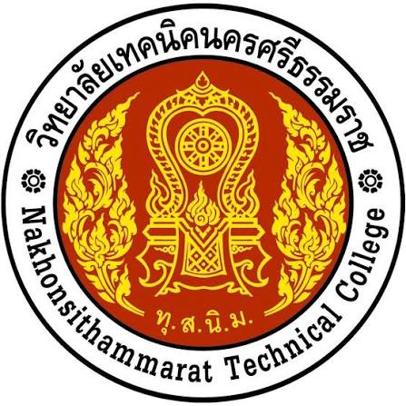

ระดับประถมศึกษา
PERSONAL PROFILE
ประวัติส่วนตัว.
ข้อมูลส่วนตัวและประวัติการศึกษาของผม
ชื่อ-สกุลนายธาวิน เดชวัฒน์
ชื่อเล่นวิน
ชั้น / กลุ่มปวส.1 / กลุ่ม 2
รหัสนักเรียน69319010023
วันเกิด10 มีนาคม พ.ศ. 2550
อายุ19 ปี
ส่วนสูง / น้ำหนัก175 ซม. / 70 กก.
สัญชาติ / เชื้อชาติไทย / ไทย
ศาสนา / กลุ่มเลือดพุทธ / A
ที่อยู่ปัจจุบัน80/2 หมู่ที่ 10 ตำบลท่าขึ้น อำเภอท่าศาลา
ภูมิลำเนานครศรีธรรมราช
เบอร์โทรศัพท์080-504-9881
E-mail69319010023@tnk.ac.th
เป้าหมายเรียนให้จบ
EDUCATION
ประวัติการศึกษา
มัธยมศึกษาตอนต้น
โรงเรียนเมืองนครศรีธรรมราช

ประกาศนียบัตรวิชาชีพ (ปวช.)
วิทยาลัยเทคนิคนครศรีธรรมราช
ปัจจุบัน · ประกาศนียบัตรวิชาชีพชั้นสูง (ปวส.1)
วิทยาลัยเทคนิคนครศรีธรรมราช
สาขาเทคโนโลยีสารสนเทศ · กลุ่ม 2
PROFILE / 01ONLINE

Thawin DetwatInformation Technology